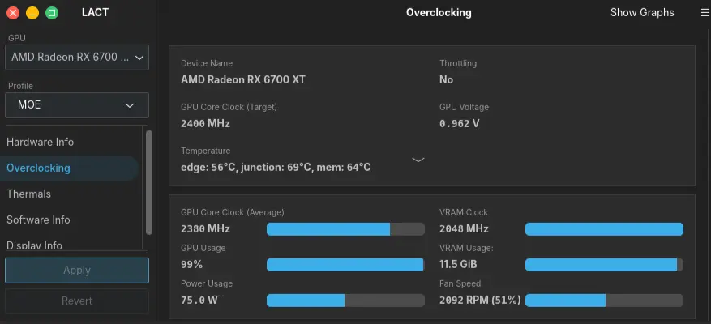
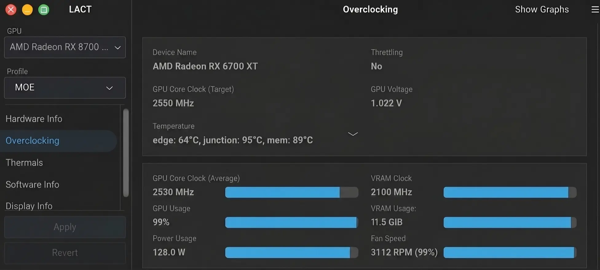
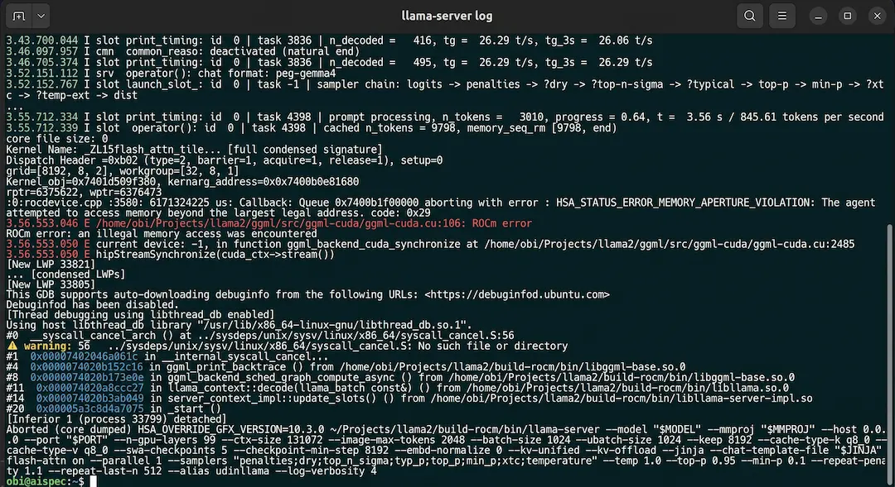
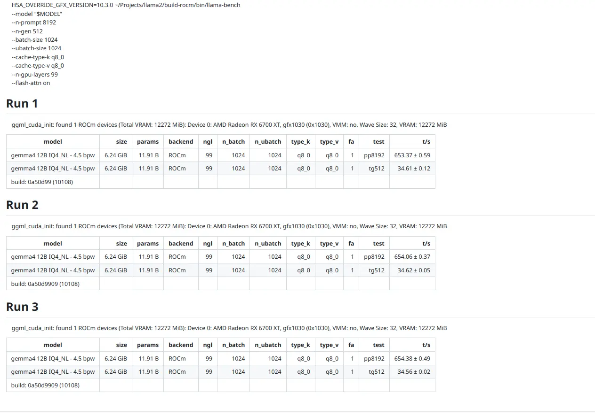
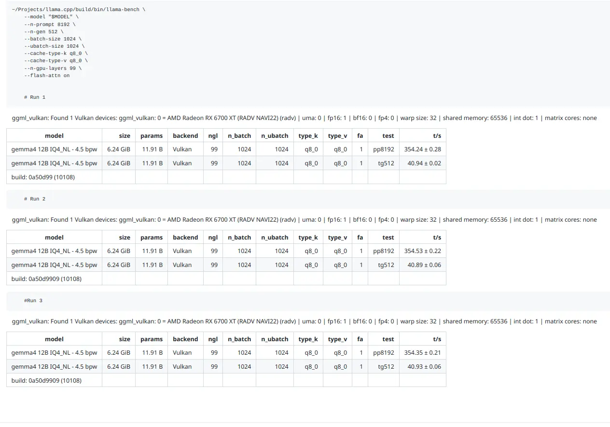

Experiment 008
StableFound the Bug, Fixed the Stack: ROCm gfx1031 vs Vulkan on RX 6700 XT.
Can an “unsupported” RDNA2 card (RX 6700 XT gfx1031) beat Vulkan by 23% wall-clock on 8K context — once the GFX-target bug and flash-attention assert are found and fixed?
Looking for the better native version? This page uses override workaround. EXP 009 refines it to native without override + Reddit write-up (580 tok/s sustained, 35B split).
System Requirements
CPU
Intel Core i5-11400F
RAM
16GB DDR4 3200 MT/s XMP
GPU
RX 6700 XT 12GB (gfx1031 Navi22)
OS
Ubuntu Desktop 26.04 LTS
ROCm / HIP
7.1.52801 + clang 21.1.8
llama.cpp
0a50d99 build 10108
Model Under Test
gemma-4-12b-it-IQ4_NL 6.24GiB
Tuning
LACT Manual Compute 182W -90mV
Status
STABLE (workaround)
Native gfx1031 requires HSA_OVERRIDE_GFX_VERSION=10.3.0 + FA assert patch. Upstream fix pending — see GitHub #26702.
Screenshots
Same LACT tuning for both backends — no backend-specific tuning. Full terminal tables in issue #26702.





Visualization
Prefill wins, decode loses — net win.
Same model gemma-4-12b-it-IQ4_NL (layers fully on GPU), same flags. Only backend changed. 3-run average from issue #26702.
Note: numbers here use a different model than EXP 009 (35B A3B split CPU/GPU) — same goal, different experiment, do not compare directly.
Prefill pp8192 +84.5%
tokens / second, higher is better
ROCm 653.37 / 654.06 / 654.38 · Vulkan 354.24 / 354.53 / 354.35
Decode tg512 -15.4%
tokens / second, higher is better — ROCm loses here
ROCm 34.61 / 34.62 / 34.56 · Vulkan 40.94 / 40.89 / 40.93 — TOP_K gap under investigation (EXP 009)
23% net wall-clock win — why prefill matters more.
Full cycle: 8192 prefill + 512 generate. Prefill dominates at this depth.
prefill 12.5s (653.9 t/s) + decode 14.8s (34.6 t/s)
prefill 23.1s (354.4 t/s) + decode 12.5s (40.9 t/s)
Crossover ~1760 tokens — below that Vulkan is net-faster, above that ROCm wins. Effectively all long-context workloads (32K–120K+) favor ROCm once it runs.
For those of you unable to read this data from technical standpoint, here is the conclusion:
My graphics card (RX 6700 XT) is officially “unsupported” by the fast AI software (ROCm). The easy software (Vulkan) works instantly but is slow where it matters most.
I found two roadblocks: the software didn’t recognize my card so I had to disguise it as its close neighbor, and a safety check crashed the fast-memory mode I need for long documents.
I fixed both locally with two small workarounds — and measured carefully 3 times each: fast mode reads 653 pages per second vs 354 for easy mode on long documents.
Over a full job (read 8192 + write 512), fast mode finishes in 27 seconds vs 36 seconds — 23% faster — even though it writes slightly slower. For long documents, reading dominates the total time.
My fix is stable for daily use, but I reported it publicly upstream so everyone benefits. I linked the bug report so you can verify — no magic numbers. The remaining write-speed mystery is next in EXP 009.
Experiment Details
My RX 6700 XT is gfx1031 (Navi22) — no first-class ROCm target in llama.cpp. The choice is painful: Vulkan just works but is ~85% slower on prefill at 8K, while ROCm is faster but needs manual workarounds and crashes on flash-attention. For long-context research and agentic workloads that routinely run 32K–120K+ tokens, this decides whether 12GB VRAM is usable or constantly OOM.
This backend optimization was not optional — EXP 001 would not exist without it. EXP 001 is the result after successfully tuning the GPU backend. This page (EXP 008) is the first mandatory unlock via override workaround; EXP 009 refines it to native without override.
- 1.
LACT sweet-spot for long-context: Manual level, Compute profile, power 182/223W, max clock 2350MHz (vs 2600 stock), voltage -90mV, VRAM 1900MHz — identical tuning for both backends, no backend-specific tuning.
- 2.
ROCm build from commit
0a50d99:-DGGML_HIP=ON -DAMDGPU_TARGETS=gfx1030withclang / hipcc, runtimeHSA_OVERRIDE_GFX_VERSION=10.3.0to masquerade gfx1031 as gfx1030. - 3.
Vulkan build:
cmake -B build -DGGML_VULKAN=1— no tweak, no drama, RADV NAVI22. - 4.
Bench template (only backend changed):
--n-prompt 8192 --n-gen 512 --batch-size 1024 --ubatch-size 1024 --cache-type-k q8_0 --cache-type-v q8_0 --n-gpu-layers 99 --flash-attn onongemma-4-12b-it-IQ4_NL.gguf(6.24 GiB). - 5.
Server template proving long-context usable:
--ctx-size 131072 --spec-draft-model mtp-gemma --flash-attn on --kv-unified --kv-offload— full command in Configuration Template. Note: at this stage I had not yet understoodkv-unifiedin detail — see EXP 009 for the refined--no-kv-unifiediteration. - 6.
Flash-attention is mandatory: KV quant, usable context size, and MTP speculative decoding all depend on it. Turning FA off is not a viable fallback.
- 7.
Measurement: 3 runs per backend, identical batch/cache,
llama-benchexcludes sampling time — so decode gap needs separate isolation.
For gfx1031 long-context, ROCm with correct GFX handling and working flash-attention will beat Vulkan net wall-clock despite a decode deficit — because prefill dominates the cycle. The friction is build/runtime packaging, not hardware capability.
I built both backends from the same commit, ran llama-bench 3× each with identical flags, and captured terminal tables. I attempted a native gfx1031 target first — confirmed it fails without override. I then hit the FA assert, patched it locally with a minimal guard, kept FA on, and re-ran. Finally I converted t/s to wall-clock math and computed the crossover point.
- 1.
gfx1031 has no working native target. Building with
-DAMDGPU_TARGETS=gfx1031fails to run correctly — I must build for neighboringgfx1030and override at runtime withHSA_OVERRIDE_GFX_VERSION=10.3.0. Ask: native Navi22 support without masquerade. - 2.
Flash-attention assert crash.
GGML_ASSERT(max_blocks_per_sm > 0)inggml/src/ggml-cuda/fattn-common.cuhcrashes on this backend/target combo. Workaroundif <=0 then =1avoids crash but correctness/occupancy is unknown. Ask: root-cause fix or reviewed guidance.
From “Vulkan is enough” to “ROCm is worth the friction.” I kept Vulkan as baseline, isolated ROCm variables one by one (GFX override → FA patch → bench), and refused to disable FA because that would hide the exact workload where ROCm wins. I documented workarounds honestly with an unknown-correctness disclaimer instead of silently forking — so maintainers can fix root cause while users stay productive.
3-run average per backend, same commit 0a50d99, same model and flags. Full tables in issue #26702 + screenshots above.
pp8192 ROCm
653.9 t/s
avg of 3
pp8192 Vulkan
354.4 t/s
avg of 3
Delta prefill
+84.5%
ROCm wins
tg512 ROCm
34.6 t/s
avg of 3
tg512 Vulkan
40.9 t/s
avg of 3
Delta decode
-15.4%
Vulkan wins
Total 8192+512
27.3s vs 35.6s
ROCm vs Vulkan
Net win
~23% Stable
workaround
ROCm wins net wall-clock by ~23% at 8K (27.3s vs 35.6s) despite losing decode throughput. Crossover is ~1760 prompt tokens — ROCm is the better backend for effectively all long-context workloads on this hardware, once it can be built and run without manual patching. The workaround stack is STABLE locally for 131K server + MTP speculative decoding use.
Optimization lives under the model: GFX target handling + flash-attention occupancy matter more than prompt tricks for long-context. A one-line assert can gate an entire hardware family out of its best workload. An honest workaround with an unknown-correctness disclaimer + an upstream report beats a silent fork — it keeps me productive today while letting maintainers fix the root cause for everyone.
For RDNA2 owners (RX 6600/6700): don’t settle for Vulkan if you do long-context — use the override + patch documented below, keep LACT conservative, keep KV q8_0 + FA on. For llama.cpp: two small fixes (native gfx1031 + FA occupancy) would unlock this series without user patching. Until then this page + #26702 is the reproducible reference. Decode TOP_K gap is next — see EXP 009 teaser.
Configuration Template
ROCm workaround — build + FA patch + bench (from #26702)
# Build ROCm as gfx1030 (gfx1031 native fails without override)
cmake -S ~/Projects/llama2 -B ~/Projects/llama2/build-rocm \
-DCMAKE_BUILD_TYPE=Release \
-DCMAKE_C_COMPILER=clang -DCMAKE_CXX_COMPILER=hipcc \
-DGGML_HIP=ON -DAMDGPU_TARGETS=gfx1030 -DCMAKE_HIP_ARCHITECTURES=gfx1030
cmake --build ~/Projects/llama2/build-rocm -j"$(nproc)"
# FA assert workaround (correctness UNKNOWN — see #26702)
sed -i 's/GGML_ASSERT(max_blocks_per_sm > 0);/if (max_blocks_per_sm <= 0) { max_blocks_per_sm = 1; }/g' \
~/Projects/llama2/ggml/src/ggml-cuda/fattn-common.cuh
# Bench (only backend changed vs Vulkan)
HSA_OVERRIDE_GFX_VERSION=10.3.0 ~/Projects/llama2/build-rocm/bin/llama-bench \
--model "$MODEL" --n-prompt 8192 --n-gen 512 \
--batch-size 1024 --ubatch-size 1024 \
--cache-type-k q8_0 --cache-type-v q8_0 \
--n-gpu-layers 99 --flash-attn on
Vulkan baseline — no bug, no drama
cmake -B build -DGGML_VULKAN=1 cmake --build build --config Release ~/Projects/llama.cpp/build/bin/llama-bench \ --model "$MODEL" --n-prompt 8192 --n-gen 512 \ --batch-size 1024 --ubatch-size 1024 \ --cache-type-k q8_0 --cache-type-v q8_0 \ --n-gpu-layers 99 --flash-attn on
Do not copy the sed patch blindly. It avoids the crash and benches stably, but only a maintainer can confirm it is safe for gfx1031. Track issue #26702 for reviewed guidance.
- 1.
I kept LACT identical for both backends so the win cannot be dismissed as tuning difference — Manual Compute, 182W, -90mV.
- 2.
I kept FA on because KV
q8_0+ long context + MTP all require it — disabling FA would hide ROCm’s advantage. - 3.
I used override at runtime, not build time —
HSA_OVERRIDE_GFX_VERSION=10.3.0lets gfx1031 masquerade as gfx1030 without forking the build. - 4.
I reported upstream with full tables — 3 runs each, same commit, so anyone can reproduce instead of trusting my summary.
FAQ
Frequently Asked Questions
Why not just use Vulkan? It works out of the box. ▼
Vulkan needs no patch, but at 8192 context it does 354 t/s prefill vs ROCm 653 t/s. That is 23.1s vs 12.5s prefill — net 35.6s vs 27.3s full cycle. Below ~1760 tokens Vulkan is net-faster, above that ROCm wins. For long-context research and agentic work, ROCm is clearly better once running.
Is forcing max_blocks_per_sm = 1 safe? ▼
Unknown — that is why it is reported as bug #26702, not a fix. It avoids the crash and benches stably across 3 runs, but only a maintainer can confirm correctness and occupancy for gfx1031. Do not treat the one-liner as an upstream fix.
Does this explain the decode being slower on ROCm? ▼
No. llama-bench excludes sampling time, so the TOP_K unsupported on ROCm log seen in llama-server is not confirmed as the cause of the tg512 gap here. That TOP_K CPU fallback was a side effect of the gfx override — it is indirectly fixed in EXP 009 by running natively without override.
Disclaimer
Workaround, Not Upstream Fix
This experiment is STABLE with my local workarounds (GFX override + FA assert guard) on the hardware and commit listed above. It is not an upstream fix. Native gfx1031 support and a reviewed flash-attention fix are pending with maintainers. Numbers are from 3-runllama-benchongemma-4-12b-it-IQ4_NL— reproducible with the commands above, not a guarantee for every model or ROCm version. I disclosed themax_blocks_per_sm = 1guard as correctness-unknown on purpose.
Upstream report: ggml-org/llama.cpp#26702 — Misc. bug: ROCm gfx1031 build report (why ROCM is better than vulkan)
Upstream: llama.cpp #26702 — EXP 009 will cover TOP_K decode investigation.